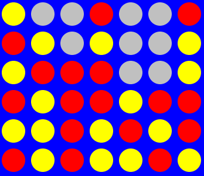

RL: Connect Four is a software project that I've worked on in the winter semester 2011/12 at the Project: Learning Agents course of B.Sc. Applied Computer Science (B-AI).
The project's goal was to apply Reinforcement Learning (RL) on the game Connect Four, to teach a computer to play it successfully. This has turned out to be unviable, because the game's state space is too big. The needed database would grow on to about 49.5 TiB during the training phase.
Daniel Wehring created RL: Connect Four in the summer semester 2011. He used the RL framework by Patrick Boekhoven, that was developed as part of his bachelor thesis with the JADE agent framework.
My contribution mainly consisted of a detailed code refactoring[1]The RL algorithms of the RL framework, as well as the Connect Four application of the framework, contained severe bugs, that prohibited effectual learning.
For example: there was a 64-bit integer overflow in the calculation of the Connect Four state IDs, which prevented them to address states bijectively., runtime optimizations and additional documentation for the game and the RL framework.
The documentation of my work for the project is available here.
At the end of the project, I gave a presentation for the course participants of the next semester, in which I briefly explained Reinforcement Learning and introduced RL: Connect Four.
| Languages | Java, UML |
|---|---|
| Technologies | JADE, Reinforcment Learning, Q-Learning, SARSA, Temporal difference learning |
| Tools | Dia, MediaWiki, Libre Office Impress |
| IDE | Eclipse |
| Participants | 1 (2 total) |

{kind=link}